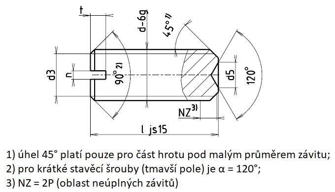

Příklad označení stavěcího šroubu se závitem M5, délky l=20 mm, pevnostní třídy 14H:
STAVĚCÍ ŠROUB ISO 7436 – M5×20 – 14H
| Závit d | M1,2 | M1,6 | M2 | M2,5 | M3 | (M3,5) | M4 | M5 | M6 | M8 | M10 | M12 |
|---|---|---|---|---|---|---|---|---|---|---|---|---|
| d3 | = malému průměru závitu d3 | |||||||||||
| d5-IT14 | 0,8 | 1 | 1,2 | 1,4 | 1,7 | 2 | 2,5 | 3 | 5 | 6 | 8 | |
| n | 0,2 | 0,25 | 0,25 | 0,4 | 0,4 | 0,5 | 0,6 | 0,8 | 1 | 1,2 | 1,6 | 2 |
| nmin. | 0,26 | 0,31 | 0,31 | 0,46 | 0,46 | 0,56 | 0,66 | 0,86 | 1,06 | 1,26 | 1,66 | 2,06 |
| nmax. | 0,4 | 0,45 | 0,45 | 0,6 | 0,6 | 0,7 | 0,8 | 1 | 1,2 | 1,51 | 1,91 | 2,31 |
| tmin. | 0,4 | 0,56 | 0,64 | 0,72 | 0,8 | 0,96 | 1,12 | 1,28 | 1,6 | 2,0 | 2,4 | 2,8 |
| tmax. | 0,52 | 0,74 | 0,84 | 0,95 | 1,05 | 1,21 | 1,42 | 1,63 | 2,0 | 2,5 | 3,0 | 3,6 |
| Závit d | M1,6 | M2 | M2,5 | M3 | (M3,5) | M4 | M5 | M6 | M8 | M10 | M12 |
|---|---|---|---|---|---|---|---|---|---|---|---|
| Délka l | Přibližná hmotnost 1000 šroubů [g] | Přibližná hmotnost jednoho šroubu [g] | |||||||||
| 2 | 20 | ||||||||||
| 2,5 | 26 | 42 | |||||||||
| 3 | 31 | 51 | 81 | 119 | |||||||
| 4 | 43 | 70 | 111 | 164 | 215 | 273 | |||||
| 5 | 55 | 89 | 141 | 208 | 275 | 351 | 649 | ||||
| 6 | 66 | 107 | 171 | 252 | 335 | 428 | 673 | 0,929 | |||
| 8 | 89 | 145 | 231 | 340 | 454 | 583 | 920 | 1,280 | 2,25 | ||
| 10 | 182 | 291 | 428 | 573 | 738 | 1170 | 1,640 | 2,89 | 4,44 | ||
| 12 | 351 | 517 | 692 | 893 | 1420 | 1,990 | 3,53 | 5,45 | 7,75 | ||
| 14 | 605 | 811 | 1050 | 1660 | 2,340 | 4,16 | 6,45 | 9,20 | |||
| 16 | 693 | 930 | 1200 | 1910 | 2,690 | 4,80 | 7,46 | 10,65 | |||
| 20 | 1169 | 1510 | 2410 | 3,400 | 6,07 | 9,46 | 13,57 | ||||
| 25 | 3020 | 4,280 | 7,67 | 11,98 | 17,20 | ||||||
| 30 | 5,170 | 9,26 | 14,49 | 20,84 | |||||||
| 35 | 10,9 | 17,00 | 24,48 | ||||||||
| 40 | 12,5 | 19,51 | 28,12 | ||||||||
| 45 | 22,02 | 32,75 | |||||||||
| 50 | 24,53 | 35,39 | |||||||||
| 55 | 38,99 | ||||||||||
| 60 | 42,63 | ||||||||||